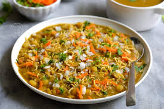

Masala Puri

Masala Puri is a popular street food in India, especially in the coastal regions. It is made by topping crispy puris with a spicy, flavorful curry made of mashed potatoes and peas, then garnishing with chutneys and sev. This savory chaat is perfect for a snack or as a meal.
Ingredients:
- For the Masala (Spicy Gravy):
- 2 large potatoes, boiled and mashed
- 1/2 cup peas (boiled)
- 1 tablespoon oil
- 1/2 teaspoon cumin seeds
- 1 onion, finely chopped
- 1 tomato, finely chopped
- 1 teaspoon ginger-garlic paste
- 1 teaspoon red chili powder
- 1 teaspoon garam masala
- 1/2 teaspoon turmeric powder
- Salt to taste
- 2 cups water
- For the Toppings:
- 8-10 puris (ready-made or homemade)
- 1/4 cup sev
- 1/4 cup chopped coriander leaves
- 1/4 cup tamarind chutney
- 1/4 cup green chutney
- Chopped onions and tomatoes for garnish
Instructions:
-
Prepare the Masala:
- Heat oil in a pan and add cumin seeds. Let them splutter.
- Add chopped onions and sauté until golden brown.
- Add ginger-garlic paste and cook for another minute. Then, add chopped tomatoes and cook until soft.
- Now add red chili powder, garam masala, turmeric, and salt. Stir well.
- Add the mashed potatoes and boiled peas. Mix everything together, adding water to form a thick, gravy-like consistency. Let it simmer for 5 minutes.
-
Assemble the Masala Puri:
- Place the puris on a serving plate.
- Top each puri with a generous amount of the masala gravy.
- Garnish with sev, coriander leaves, chopped onions, tomatoes, and both chutneys.
Serving:
Serve Masala Puri immediately after assembling to enjoy the crispiness of the puris. This chaat is best served as a snack or appetizer.😊